library(readxl) #leitura de arquivos excel
library(dplyr) #manipulação dos dados
library(survival) #análise de sobrevivência
library(survminer) #gráficos de sobrevivência
#install.packages("coxme")
library(coxme) #modelo de cox com efeitos aleatórios
library(lme4) #modelos lineares generalizados mistos (glmm)
library(lmerTest)
library(car) #ANOVA tipo III para glmm
#install.packages("emmeans")
library(emmeans) #comparações mútiplas post-hoc
#install.packages()
library(drc) #curvas dose-resposta e cálculo de TL50
library(tidyverse) #manipulação, visualização e análise de dados
#install.packages("DHARMa")
library(DHARMa)
library(utf8)
library(broom) # Para converter survfit em dataframe do ggplotCollective defense strategies
Isolates selection
Rationale
The first phase of this study aimed to select an entomopathogenic fungal isolate to evaluate how a toxic substrate affects the collective immune defense of Atta sexdens.
Pathogenicity was evaluated on A. sexdens foragers exposed to five Metarhizium robertsii isolates—kindly provided by the Laboratório de Interações Inseto-Microrganismos at the Universidade Federal de Viçosa.
Twenty-four hours prior to the bioassays, colonies were starved. Following starvation, colonies were randomly assigned to two groups and exposed to one of two substrate regimes for seven days: (i) 10.0 g of Acalypha wilkesiana leaves daily (control group), or (ii) 10.0 g of fresh Tropaeolum majus leaves daily, serving as a potential modulating agent of social defenses.
After this period, individual ants from these colonies were immersed for two seconds in a conidial suspension at a concentration of 1x10⁶ conidia/mL, containing distilled water and 0.01% Tween 80. Three control groups were evaluated: (1) an aqueous solution of 0.01% Tween 80 (vehicle control), (2) distilled water (negative control), and (3) a 0.1% isocycloseram solution (positive control). Each treatment consisted of four replicates (Petri dishes) with five foragers each. Ants were housed in Petri dishes lined with moistened filter paper and maintained in a BOD incubator at 27 ± 2 °C, 70 ± 10% relative humidity, and continuous darkness (0:24 h L:D). The ants were starved throughout the 5-day evaluation period, and mortality was recorded daily. Dead individuals were immediately removed and transferred to individual moist chambers (microcentrifuge tubes containing cotton and autoclaved distilled water) to evaluate fungal sporulation (confirming mycosis).
To ensure that colonies actively interacted with the provided substrates and to characterize potential sublethal behavioral effects during the 7-day pre-exposure period, daily foraging activity (leaf consumption) and waste production were monitored for each colony. Quantifying consumption confirmed whether T. majus induced feeding deterrence over time while maintaining active substrate intake, whereas waste accumulation served as a baseline indicator of colony maintenance and hygienic activity prior to pathogen exposure.
Installing and loading packages.
Foraging data
Descritive statistic
Descriptive statistics were calculated for each substrate and day, using colony-level observations as the experimental units.
foraging_exp1 <- read_excel("foraging_bioassay_4.xlsx")
#estatística descritiva
descritiva_forrag <- foraging_exp1 %>%
group_by(substrate, day) %>%
summarise(
n = n(),
media = mean(real_consume, na.rm = TRUE),
sd = sd(real_consume, na.rm = TRUE),
se = sd(real_consume, na.rm = TRUE) / sqrt(n),
mediana = median(real_consume, na.rm = TRUE),
.groups = "drop"
)
descritiva_forrag# A tibble: 14 × 7
substrate day n media sd se mediana
<chr> <dbl> <int> <dbl> <dbl> <dbl> <dbl>
1 control 1 4 8.30 0.0206 0.0103 8.3
2 control 2 4 8.50 0.0320 0.0160 8.50
3 control 3 4 8.18 0.0171 0.00854 8.18
4 control 4 4 8.58 0.0369 0.0184 8.58
5 control 5 4 8.54 0.0330 0.0165 8.54
6 control 6 4 8.68 0.0250 0.0125 8.68
7 control 7 4 8.08 0.0383 0.0191 8.07
8 tropaeolum 1 4 4.83 2.17 1.09 4.81
9 tropaeolum 2 4 2.80 0.601 0.300 2.85
10 tropaeolum 3 4 2.24 0.911 0.455 2.49
11 tropaeolum 4 4 2.76 0.512 0.256 2.81
12 tropaeolum 5 4 1.74 1.24 0.619 1.91
13 tropaeolum 6 4 1.81 1.06 0.532 1.76
14 tropaeolum 7 4 2.22 1.35 0.676 2.29#histograma
ggplot(foraging_exp1, aes(x = real_consume, fill = substrate)) +
geom_histogram(bins = 10, alpha = 0.4) +
labs(x = "Consumption", y = "Frequency")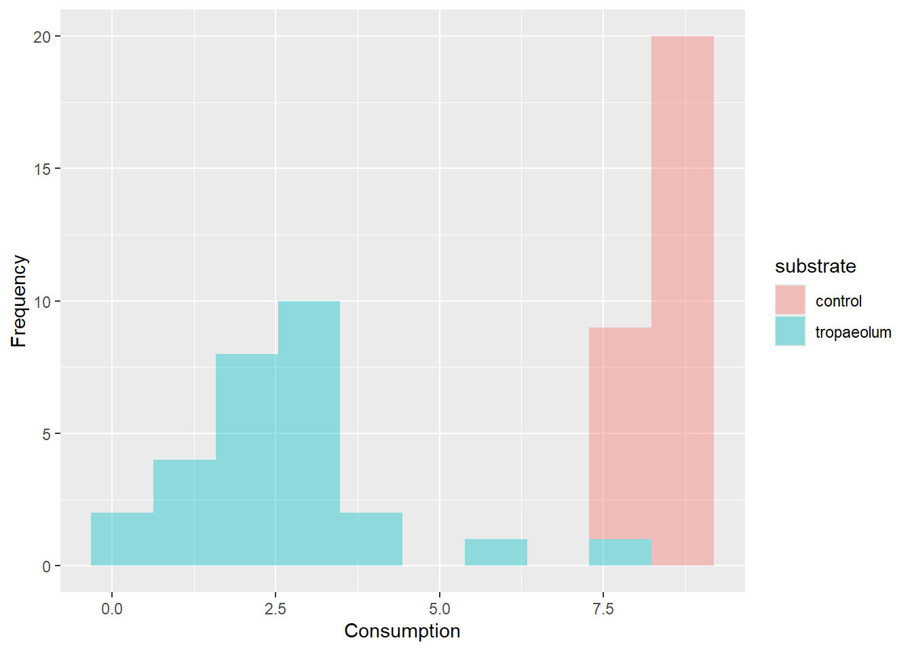
#dispersion
ggplot(foraging_exp1, aes(x = day, y = real_consume, color = substrate, group = colony)) +
geom_line(alpha = 0.5) +
geom_point(size = 3) +
labs(x = "Day", y = "Consumption")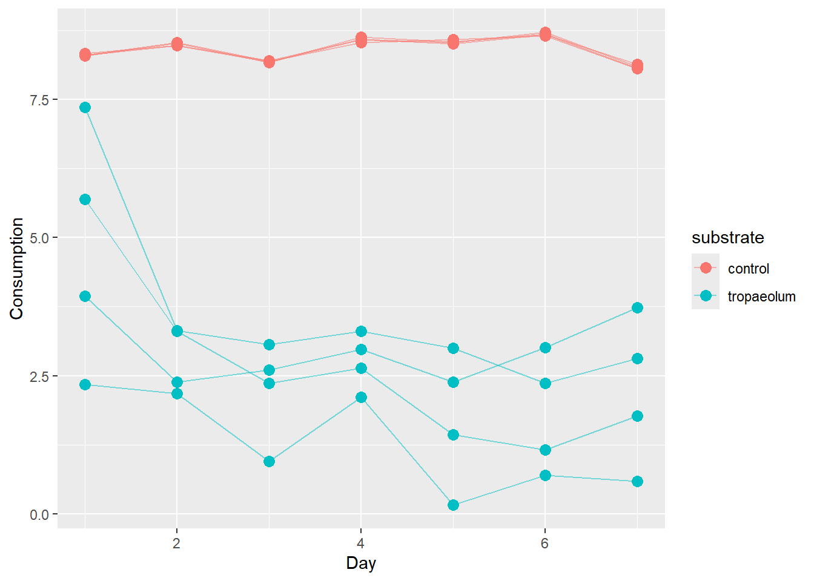
Inferencial statistics
Foraging activity (substrate consumption) and waste production data were analyzed using mixed-effects modeling frameworks in R. Experimental day was zero-indexed by subtracting 1 from the original day variable (day_c = day - 1), setting Day 1 as time zero to facilitate the interpretation of model intercepts and initial treatment effects. Model assumptions were evaluated through visual inspection of raw and simulated quantile residuals using the DHARMa package, as well as Shapiro–Wilk tests for residual normality.
Foraging consumption data exhibited strong heteroscedasticity and non-normality when fitted with standard linear mixed models. Therefore, consumption was analyzed using a Generalized Linear Mixed Model (GLMM) via the glmmTMB package, specifying a Gamma distribution with a log-link function and a substrate-specific dispersion structure (dispformula = ~ substrate). Waste production met linear mixed model assumptions and was analyzed using a standard Linear Mixed Model (LMM) fitted with the lmer function from the lme4 package. Both models included substrate, day (day_c), and their interaction as fixed effects, and colony as a random intercept to account for the non-independence of repeated observations from the same colony.
Hypothesis testing was performed using Type III Wald \(\chi^2\) tests via the car package. Estimated marginal means were obtained using the emmeans package to characterize predicted values across experimental days, while emtrends was used to compare the temporal slopes of consumption between substrates.
#centralização da variável para estabelecer o dia 1 como o tempo 0
foraging_exp1 <- foraging_exp1 %>%
mutate(day_c = day - 1)
#ajustando o modelo linear misto
modelo_consumo <- lmer(
real_consume ~ substrate * day_c + (1 | colony),
data = foraging_exp1
)
plot(modelo_consumo)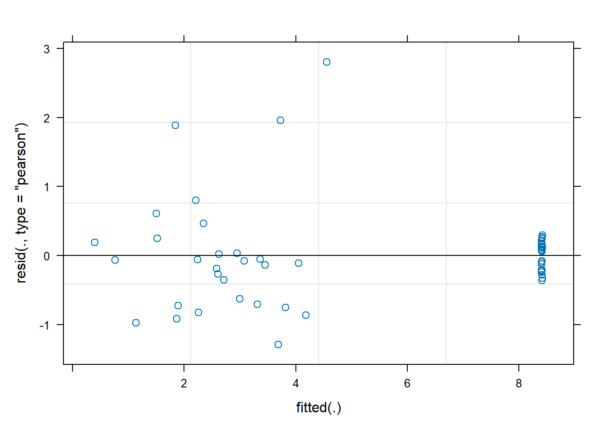
#verificando a normalidade dos resíduos do modelo
print(shapiro.test(residuals(modelo_consumo)))
Shapiro-Wilk normality test
data: residuals(modelo_consumo)
W = 0.81546, p-value = 6.769e-07qqnorm(residuals(modelo_consumo))
qqline(residuals(modelo_consumo))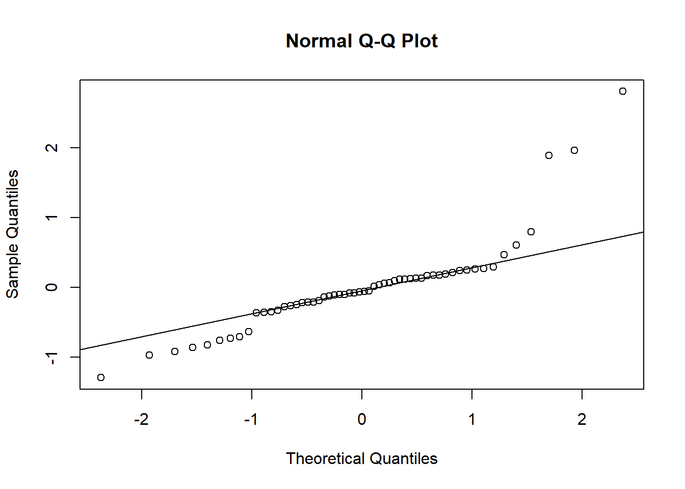
# alguns valores de consumo são muito mais altos do que o modelo previa
simres <- simulateResiduals(modelo_consumo)
plot(simres)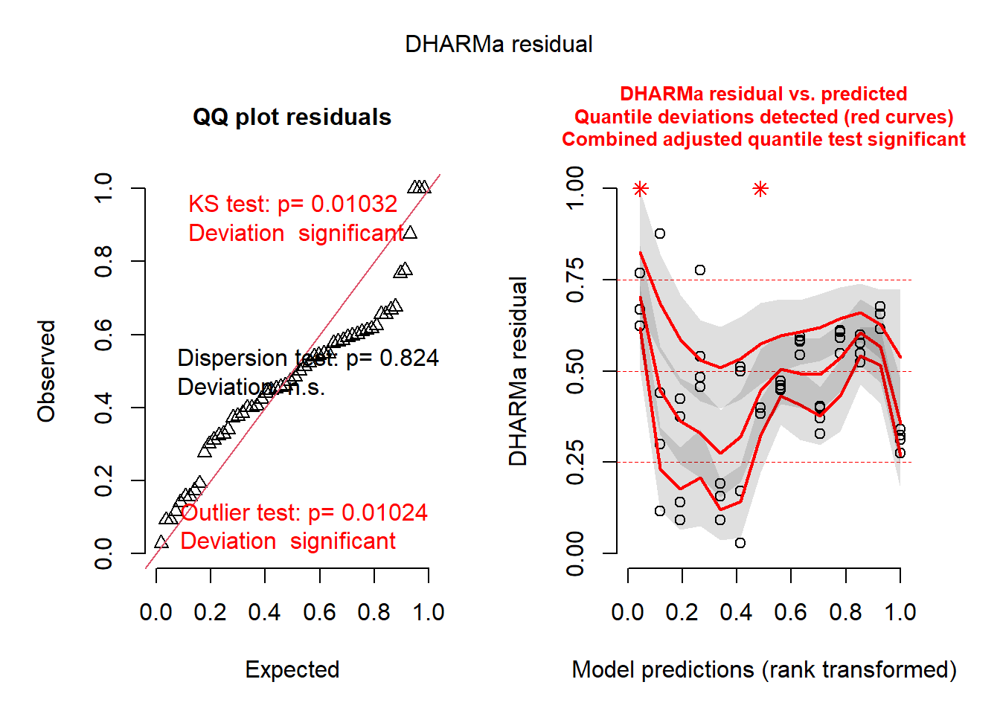
# O teste de Kolmogorov-Smirnov foi significativo (0,0062), confirmando que a distribuição teórica assumida pelo modelo não se adequa aos seus dados de consumo.Além disso, existe não-linearidade no padrão de consumo ao longo dos dias/substratos ou uma variância que muda dependendo do valor predito (heterocedasticidade).
#organizando os resíduos do modelo
residuos <- data.frame(
colony = foraging_exp1$colony,
substrate = foraging_exp1$substrate,
day = foraging_exp1$day,
residual = residuals(modelo_consumo)
)
residuos %>%
arrange(colony, day) colony substrate day residual
1 1 control 1 -0.09976136
9 1 control 2 0.06854221
17 1 control 3 -0.22315422
25 1 control 4 0.17514936
33 1 control 5 0.09345293
41 1 control 6 0.26175650
49 1 control 7 -0.27993993
2 2 control 1 -0.07938215
10 2 control 2 0.05892142
18 2 control 3 -0.21277501
26 2 control 4 0.16552856
34 2 control 5 0.11383213
42 2 control 6 0.29213570
50 2 control 7 -0.32956072
3 3 control 1 -0.12216656
11 3 control 2 0.11613701
19 3 control 3 -0.24555941
27 3 control 4 0.21274416
35 3 control 5 0.13104773
43 3 control 6 0.26935130
51 3 control 7 -0.36234513
4 4 control 1 -0.09976136
12 4 control 2 0.12854221
20 4 control 3 -0.21315422
28 4 control 4 0.12514936
36 4 control 5 0.17345293
44 4 control 6 0.24175650
52 4 control 7 -0.35993993
5 5 tropaeolum 1 -0.26644996
13 5 tropaeolum 2 -0.05832496
21 5 tropaeolum 3 -0.92019996
29 5 tropaeolum 4 0.60792504
37 5 tropaeolum 5 -0.97394996
45 5 tropaeolum 6 -0.06582496
53 5 tropaeolum 7 0.19230004
6 6 tropaeolum 1 1.96152501
14 6 tropaeolum 2 -0.05034999
22 6 tropaeolum 3 -0.63222499
30 6 tropaeolum 4 0.01590001
38 6 tropaeolum 5 -0.82597499
46 6 tropaeolum 6 -0.72784999
54 6 tropaeolum 7 0.25027501
7 7 tropaeolum 1 2.80654197
15 7 tropaeolum 2 -0.86533303
23 7 tropaeolum 3 -0.75720803
31 7 tropaeolum 4 -0.13908303
39 7 tropaeolum 5 -0.08095803
47 7 tropaeolum 6 -0.35283303
55 7 tropaeolum 7 0.46529197
8 8 tropaeolum 1 -0.11197417
16 8 tropaeolum 2 -1.29384917
24 8 tropaeolum 3 -0.70572417
32 8 tropaeolum 4 0.03240083
40 8 tropaeolum 5 -0.18947417
48 8 tropaeolum 6 0.79865083
56 8 tropaeolum 7 1.88677583#plot dos resíduos do modelo ao longo dos dias
ggplot(residuos, aes(x = day, y = residual)) +
geom_hline(yintercept = 0, linetype = "dashed") +
geom_line() +
geom_point(size = 3) +
facet_wrap(~ colony + substrate)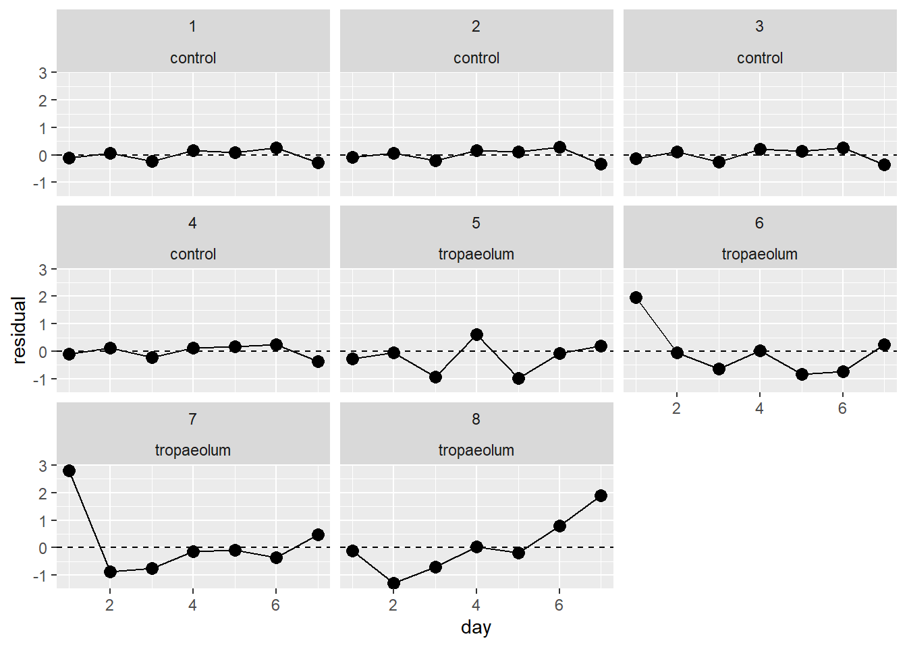
# Para o grupo controle, os resíduos são pequenos e estáveis, variando entre -0,36 e +0,29. Já para T. majus, os resíduos oscilam drasticamente, variando entre -1,29 e +2,81. Logo, esse modelo não é adequado para os dados porque: 1. A variância não é constante entre os tratamentos (Tropaeolum varia muito mais que controle) (heterocedasticidade estrutural). 2. A distribuição dos dados de consumo apresenta assimetria positiva (muitos valores pequenos/médios e picos altos no início do tratamento) (Não normalidade dos erros). 3. O consumo no tratamento Tropaeolum começa muito alto no Dia 1 e cai nos dias seguintes, gerando não-linearidade (padrão temporal no consumo).# Opção A
# GLMM com distribuição Gamma
# modelo_gamma <- glmer(
# real_consume ~ substrate * day_c + (1 | colony),
# data = foraging_exp1,
# family = Gamma(link = "log")
# )
# Validar com DHARMa
#plot(simulateResiduals(modelo_gamma))
# o algoritmo de otimização da função glmer não conseguiu encontrar uma solução matemática estável para os dados.# Opção B
#install.packages("glmmTMB")
library(glmmTMB)
# Permite variância residual diferente para cada substrato
modelo_glmmTMB <- glmmTMB(
real_consume ~ substrate * day_c + (1 | colony),
dispformula = ~ substrate, # ajusta a dispersão por substrato
family = Gamma(link = "log"),
data = foraging_exp1
)
# Validar com DHARMa
plot(simulateResiduals(modelo_glmmTMB))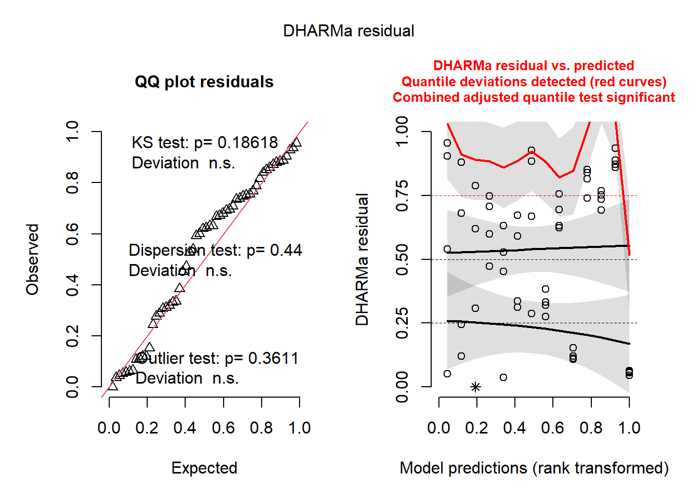
# Modelo com melhor ajuste
# ANOVA tipo III para o modelo
Anova(modelo_glmmTMB, type = "III")Analysis of Deviance Table (Type III Wald chisquare tests)
Response: real_consume
Chisq Df Pr(>Chisq)
(Intercept) 63460.9934 1 < 2.2e-16 ***
substrate 20.4800 1 6.026e-06 ***
day_c 0.0076 1 0.93075
substrate:day_c 6.4030 1 0.01139 *
---
Signif. codes: 0 '***' 0.001 '**' 0.01 '*' 0.05 '.' 0.1 ' ' 1# Como a interação deu significativa (p = 0.011), devemos desdobrar a interação para entender como a taxa de consumo muda ao longo dos dias dentro de cada substrato.
# Testar se a inclinação (tendência ao longo dos dias) é diferente entre substratos
emtrends(modelo_glmmTMB, pairwise ~ substrate, var = "day_c")$emtrends
substrate day_c.trend SE df asymp.LCL asymp.UCL
control 0.000204 0.00235 Inf -0.0044 0.0048
tropaeolum -0.124695 0.04930 Inf -0.2213 -0.0281
Confidence level used: 0.95
$contrasts
contrast estimate SE df z.ratio p.value
control - tropaeolum 0.125 0.0494 Inf 2.530 0.0114#Houve uma interação significativa entre o substrato e os dias de experimento (p = 0,0114). As colônias mantiveram um consumo constante de substrato no grupo controle ao longo do tempo (day_c.trend = 0,0002, p > 0,05). Em contrapartida, no tratamento com Tropaeolum, o consumo reduziu significativamente ao longo dos dias (day_c.trend = -0,1247, p < 0,05), indicando uma rejeição gradual ou um efeito de saciedade/repulsa acumulada ao longo do tempo.Foraging activity differed between substrates and changed differently over time. A generalized linear mixed-effects model (GLMM) with a Gamma distribution and substrate-specific dispersion structure revealed a significant main effect of substrate on consumption (Type III Wald \(\chi^2\) test, \(\chi^2_1 = 20.48\), \(P < 0.001\)) and a significant substrate × day interaction (\(\chi^2_1 = 6.40\), \(P = 0.0114\)), whereas the main effect of day was not significant (\(\chi^2_1 = 0.0076\), \(P = 0.931\)). Estimated marginal trends indicated that consumption remained stable over time on the control substrate (\(\text{slope} = 0.0002\) log-units/day, \(SE = 0.0024\), \(P > 0.05\)), whereas it decreased significantly over time on Tropaeolum majus (\(\text{slope} = -0.1247\) log-units/day, \(SE = 0.0493\), \(P < 0.05\)). Accordingly, temporal slopes differed significantly between substrates (\(z = 2.53\), \(P = 0.0114\)). Model diagnostics using simulated quantile residuals indicated no evidence of residual deviation, overdispersion, or outliers (Kolmogorov–Smirnov test, \(P = 0.486\)).
Visualizing the data
Daily Foraging Dynamics
# Extraindo predições na escala original (gramas)
emm_dias <- emmeans(
modelo_glmmTMB,
~ substrate * day_c,
at = list(day_c = 0:6)
) %>%
regrid()
# Preparando o data.frame e padronizando os nomes das colunas
preditos_df <- as.data.frame(emm_dias) %>%
rename_with(~ "emmean", any_of("response")) %>%
rename_with(~ "lower.CL", any_of("asymp.LCL")) %>%
rename_with(~ "upper.CL", any_of("asymp.UCL")) %>%
mutate(day_num = day_c + 1)
forrageamento <- ggplot() +
# Trajetórias individuais das colônias
geom_line(
data = foraging_exp1,
aes(
x = day,
y = real_consume,
group = colony,
color = substrate
),
alpha = 0.30,
linetype = "dashed",
linewidth = 0.6
) +
# Intervalo de confiança de 95% do GLMM
geom_ribbon(
data = preditos_df,
aes(
x = day_num,
ymin = lower.CL,
ymax = upper.CL,
fill = substrate,
group = substrate
),
alpha = 0.20
) +
# Linha das médias ajustadas
geom_line(
data = preditos_df,
aes(
x = day_num,
y = emmean,
color = substrate,
group = substrate
),
linewidth = 1.2
) +
# Pontos das médias ajustadas
geom_point(
data = preditos_df,
aes(
x = day_num,
y = emmean,
color = substrate
),
size = 3
) +
# Eixo X
scale_x_continuous(breaks = 1:7) +
# Cores e legenda
scale_color_manual(
values = c(
"control" = rgb(41, 51, 92, maxColorValue = 255),
"tropaeolum" = rgb(219, 43, 57, maxColorValue = 255)
),
name = "Substrate",
labels = c("control" = "Control", "tropaeolum" = expression(italic("T. majus")))
) +
scale_fill_manual(
values = c(
"control" = rgb(41, 51, 92, maxColorValue = 255),
"tropaeolum" = rgb(219, 43, 57, maxColorValue = 255)
),
name = "Substrate",
labels = c("control" = "Control", "tropaeolum" = expression(italic("T. majus")))
) +
# Rótulos dos eixos e estatística da interação
labs(
x = "Exposure Time (Days)",
y = "Consumption (g)",
subtitle = expression(paste("Substrate × Exposure Time interaction: ", chi^2, " = 6.40, ", italic(P), " = 0.011"))
) +
# Tema
theme_classic(base_size = 12) +
theme(
legend.position = "right",
legend.title = element_text(face = "bold"),
axis.title = element_text(face = "bold"),
plot.subtitle = element_text(size = 10, color = "gray25")
)
print(forrageamento)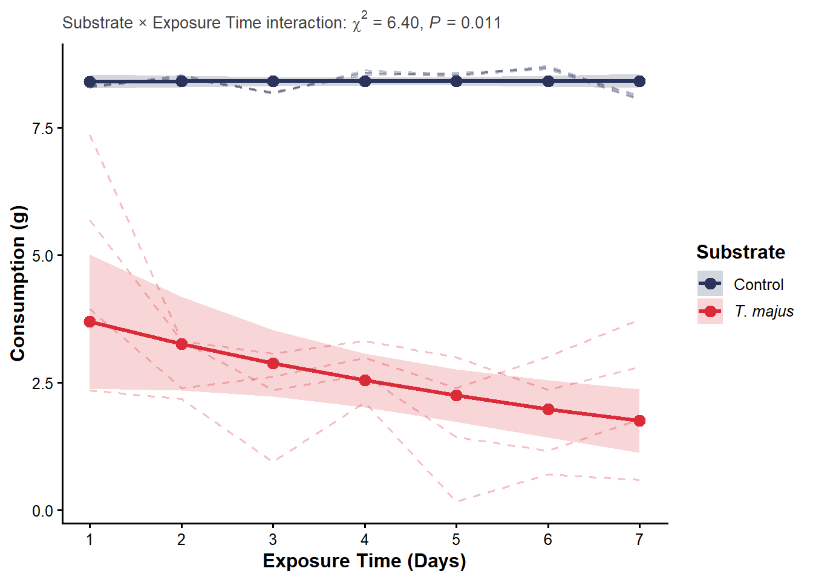
Model-estimated means ± 95% CI. Dashed lines represent individual colonies.
Waste production data
Descritive statistics
# Waste production
#estatística descritiva
descritiva_waste <- foraging_exp1 %>%
group_by(substrate, day) %>%
summarise(
n = n(),
media = mean(waste, na.rm = TRUE),
sd = sd(waste, na.rm = TRUE),
se = sd(waste, na.rm = TRUE) / sqrt(n),
mediana = median(waste, na.rm = TRUE),
.groups = "drop"
)
descritiva_waste# A tibble: 14 × 7
substrate day n media sd se mediana
<chr> <dbl> <int> <dbl> <dbl> <dbl> <dbl>
1 control 1 4 3.90 0.716 0.358 3.74
2 control 2 4 4.18 1.01 0.503 3.94
3 control 3 4 4.56 0.986 0.493 4.24
4 control 4 4 4.30 1.35 0.673 4.18
5 control 5 4 4.05 1.16 0.582 4.08
6 control 6 4 3.48 0.925 0.462 3.66
7 control 7 4 4.05 1.00 0.502 4.02
8 tropaeolum 1 4 3.01 1.74 0.872 2.61
9 tropaeolum 2 4 2.79 1.48 0.739 2.66
10 tropaeolum 3 4 2.92 1.76 0.882 2.48
11 tropaeolum 4 4 2.84 1.78 0.892 2.21
12 tropaeolum 5 4 2.84 1.42 0.708 2.32
13 tropaeolum 6 4 2.58 1.49 0.743 2.12
14 tropaeolum 7 4 2.54 1.02 0.508 2.28#histograma
ggplot(foraging_exp1, aes(x = waste, fill = substrate)) +
geom_histogram(bins = 10, alpha = 0.4) +
labs(x = "Waste production", y = "Frequency")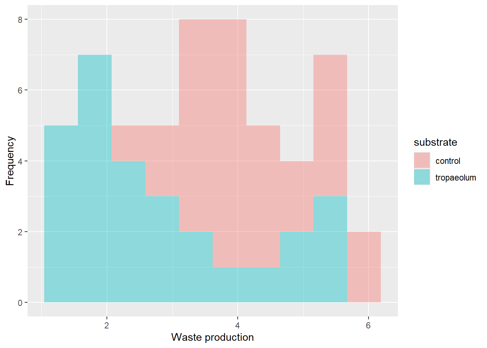
#dispersion
ggplot(foraging_exp1, aes(x = day, y = waste, color = substrate, group = colony)) +
geom_line(alpha = 0.5) +
geom_point(size = 3) +
labs(x = "Day", y = "Waste production")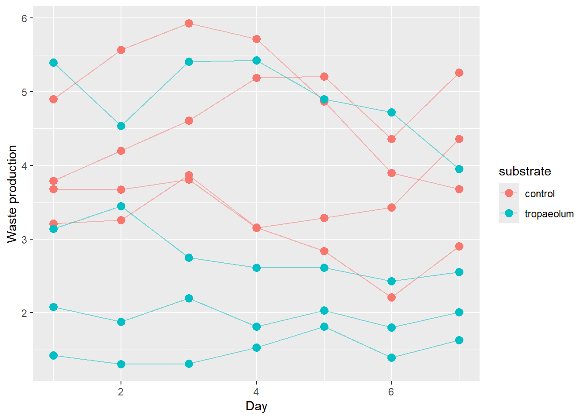
Inferencial statistics
#centralização da variável para estabelecer o dia 1 como o tempo 0
waste_exp1 <- foraging_exp1 %>%
mutate(day_c = day - 1)
#ajustando o modelo linear misto
modelo_waste <- lmer(
waste ~ substrate * day_c + (1 | colony),
data = foraging_exp1
)
plot(modelo_waste)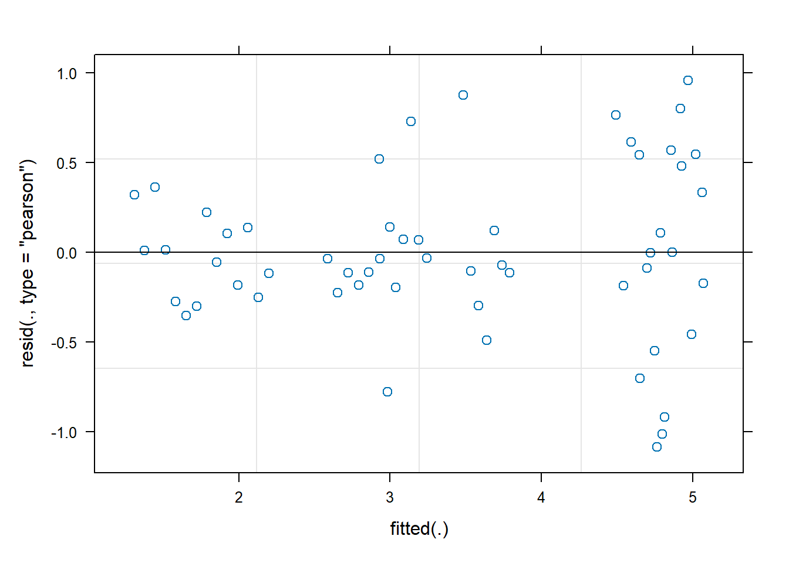
# leve formato de funil que se abre da esquerda para a direita, indicando que a variância na produção de lixo aumenta à medida que a quantidade média predita de lixo cresce.
#verificando a normalidade dos resíduos do modelo
print(shapiro.test(residuals(modelo_waste)))
Shapiro-Wilk normality test
data: residuals(modelo_waste)
W = 0.97121, p-value = 0.1996qqnorm(residuals(modelo_waste))
qqline(residuals(modelo_waste))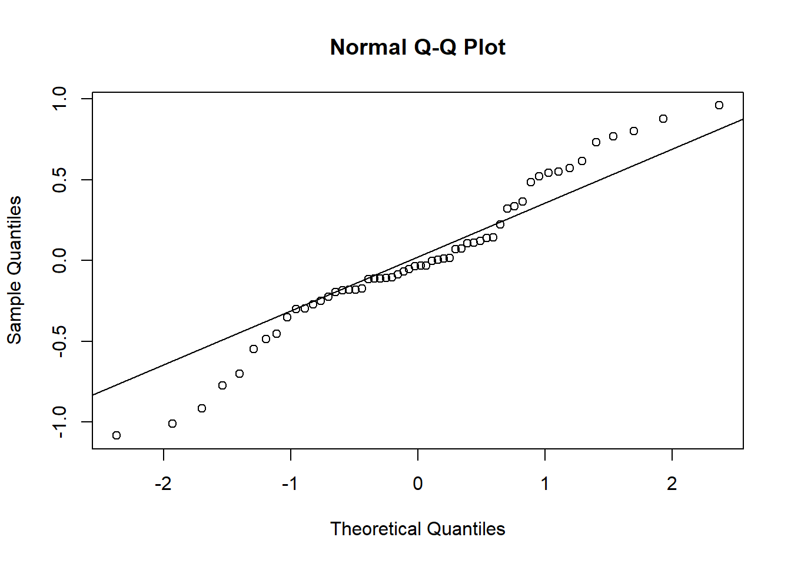
simres <- simulateResiduals(modelo_waste)
plot(simres)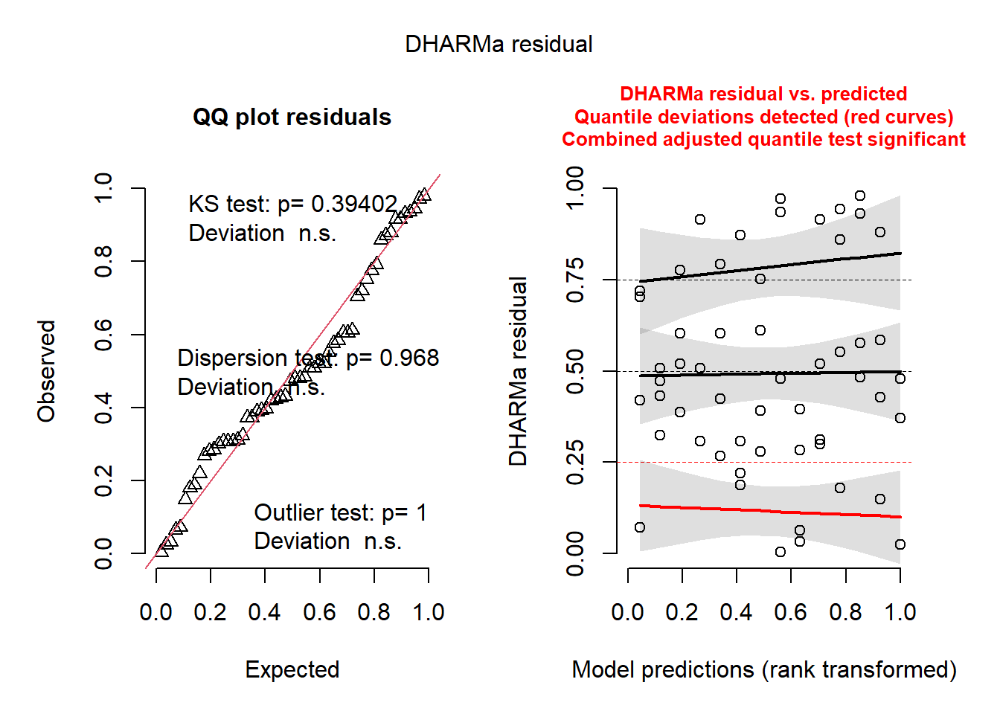
# O modelo linear misto é adequado para esses dados de produção de lixo.
Anova(modelo_waste, type = "III")Analysis of Deviance Table (Type III Wald chisquare tests)
Response: waste
Chisq Df Pr(>Chisq)
(Intercept) 44.4733 1 2.579e-11 ***
substrate 1.8890 1 0.1693
day_c 1.1985 1 0.2736
substrate:day_c 0.0675 1 0.7950
---
Signif. codes: 0 '***' 0.001 '**' 0.01 '*' 0.05 '.' 0.1 ' ' 1In contrast to foraging activity, waste production did not differ between substrates or change over time. The linear mixed-effects model showed no significant main effect of substrate (Type III Wald \(\chi^2\) test, \(\chi^2_1 = 1.89\), \(P = 0.169\)) or exposure time (\(\chi^2_1 = 1.20\), \(P = 0.274\)), and no significant substrate × day interaction (\(\chi^2_1 = 0.068\), \(P = 0.795\)). These results indicate that waste accumulation remained baseline and uniform across both experimental conditions throughout the 7-day period.
Visualizing the data
Daily Waste Production Dynamics
# Extraindo predições do modelo
emm_lixo_dias <- emmeans(
modelo_waste,
~ substrate * day_c,
at = list(day_c = 0:6)
)
# Preparando o data.frame e padronizando as colunas
preditos_lixo_df <- as.data.frame(emm_lixo_dias) %>%
rename_with(~ "emmean", any_of("emmean")) %>%
rename_with(~ "lower.CL", any_of(c("lower.CL", "asymp.LCL"))) %>%
rename_with(~ "upper.CL", any_of(c("upper.CL", "asymp.UCL"))) %>%
mutate(day_num = day_c + 1)
# Construção do gráfico
lixo_plot <- ggplot() +
# Trajetórias individuais das colônias (dados observados)
geom_line(
data = foraging_exp1,
aes(
x = day,
y = waste,
group = colony,
color = substrate
),
alpha = 0.30,
linetype = "dashed",
linewidth = 0.6
) +
# Intervalo de confiança de 95% do modelo LMM
geom_ribbon(
data = preditos_lixo_df,
aes(
x = day_num,
ymin = lower.CL,
ymax = upper.CL,
fill = substrate,
group = substrate
),
alpha = 0.20
) +
# Linha das médias ajustadas
geom_line(
data = preditos_lixo_df,
aes(
x = day_num,
y = emmean,
color = substrate,
group = substrate
),
linewidth = 1.2
) +
# Pontos das médias ajustadas
geom_point(
data = preditos_lixo_df,
aes(
x = day_num,
y = emmean,
color = substrate
),
size = 3
) +
# Eixo X
scale_x_continuous(breaks = 1:7) +
# Cores e legenda
scale_color_manual(
values = c(
"control" = rgb(41, 51, 92, maxColorValue = 255),
"tropaeolum" = rgb(219, 43, 57, maxColorValue = 255)
),
name = "Substrate",
labels = c("control" = "Control", "tropaeolum" = expression(italic("T. majus")))
) +
scale_fill_manual(
values = c(
"control" = rgb(41, 51, 92, maxColorValue = 255),
"tropaeolum" = rgb(219, 43, 57, maxColorValue = 255)
),
name = "Substrate",
labels = c("control" = "Control", "tropaeolum" = expression(italic("T. majus")))
) +
# Rótulos dos eixos e estatística da interação
labs(
x = "Exposure Time (Days)",
y = "Waste Production (g)",
subtitle = expression(paste("Substrate × Exposure Time interaction: ", chi^2, " = 0.068, ", italic(P), " = 0.795"))
) +
# Tema visual
theme_classic(base_size = 12) +
theme(
legend.position = "right",
legend.title = element_text(face = "bold"),
axis.title = element_text(face = "bold"),
plot.subtitle = element_text(size = 10, color = "gray25")
)
print(lixo_plot)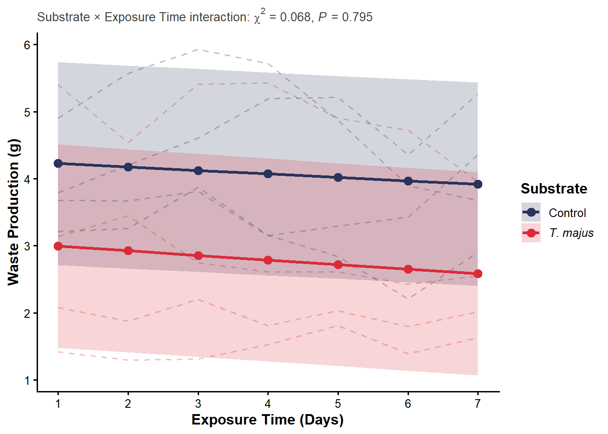
Model-estimated means ± 95% CI. Dashed lines represent individual colonies.
Survival curves (Kaplan-Meier)
Survival data were evaluated using time-to-event analysis in R. Prior to inferential modeling, the proportional hazards assumption was assessed for all covariates using Schoenfeld residual diagnostics (cox.zph function in the survival package). The chemical positive control (isocycloseram) induced complete mortality within 48 h, causing a significant violation of proportional hazards (\(\chi^2 = 35.43, P < 0.001\)). Because this treatment served strictly as a technical validation control, it was excluded from further inferential modeling to ensure statistical validity. In the remaining dataset comprising fungal isolates and negative controls, proportional hazards assumptions were fully met (global Schoenfeld test, \(\chi^2 = 10.34, P = 0.67\)).
Differences in survival rates were analyzed using a Mixed-Effects Cox Proportional Hazards model (coxme package). The model included substrate regime, fungal treatment, and their interaction (substrate * treatment) as fixed effects. Colony of origin was included as a random intercept (1 | colony) to account for potential non-independence among nestmates. Overall treatment effects were evaluated using Type III Wald \(\chi^2\) tests (car package). Post-hoc pairwise comparisons of hazard ratios (HR) were performed using the emmeans package, applying Tukey’s adjustment for multiple comparisons within and across substrate regimes.
Reading and preparing the data.
isolate_selection <- read_excel("isolates_selection_bioassay_4.xlsx")
# Definindo as variáveis categóricas
isolate_selection <- isolate_selection %>%
mutate(
substrate = as.factor(substrate),
treatment = as.factor(treatment),
inter = as.factor(sub_treat))# Criação das curvas
fit_km <- survfit(Surv(day, mortality) ~ sub_treat, data = isolate_selection)
# Teste Log-Rank
logrank_test <- survdiff(Surv(day, mortality) ~ sub_treat, data = isolate_selection)
print(logrank_test)Call:
survdiff(formula = Surv(day, mortality) ~ sub_treat, data = isolate_selection)
N Observed Expected (O-E)^2/E (O-E)^2/V
sub_treat=chag_cont 20 15 13.84 0.09689 0.13087
sub_treat=chag_i103 20 17 16.77 0.00310 0.00427
sub_treat=chag_i124 20 16 15.34 0.02831 0.03865
sub_treat=chag_i15 20 16 13.49 0.46803 0.63183
sub_treat=chag_i33 20 20 10.48 8.63685 11.40640
sub_treat=chag_i94 20 18 11.12 4.26170 5.64981
sub_treat=chag_join 20 15 8.57 4.81887 6.34628
sub_treat=chag_twee 20 14 15.34 0.11722 0.16002
sub_treat=cont_cont 20 6 19.35 9.21442 13.02529
sub_treat=cont_i103 20 12 17.69 1.82848 2.54270
sub_treat=cont_i124 20 9 19.05 5.29990 7.46120
sub_treat=cont_i15 20 16 15.22 0.03947 0.05379
sub_treat=cont_i33 20 14 16.56 0.39616 0.54776
sub_treat=cont_i94 20 15 15.15 0.00148 0.00203
sub_treat=cont_join 20 20 3.95 65.31782 82.40662
sub_treat=cont_twee 20 8 19.07 6.42780 9.05718
Chisq= 138 on 15 degrees of freedom, p= <2e-16 # Gráfico Kaplan-Meier Geral
ggsurvplot(
fit_km,
data = isolate_selection,
pval = TRUE,
risk.table = FALSE,
legend.title = "Treatments",
xlab = "Days",
ylab = "Survival probability",
ggtheme = theme_minimal()
)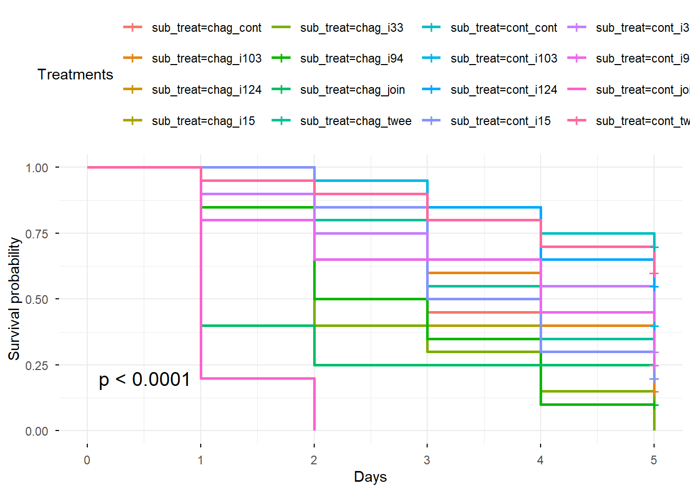
Facetando os gráficos para facilitar a visualização
# Importanto e convertendo para data.frame
isolate_selection_facet <- read_excel("isolates_selection_bioassay_4.xlsx") %>%
mutate(
substrate = as.factor(substrate),
treatment = as.factor(treatment),
sub_treat = as.factor(sub_treat)
) %>%
as.data.frame() # <-- Converte de tibble para data.frame clássico
# Ajustando o modelo Kaplan-Meier com as variáveis separadas
fit_km_sep <- survfit(
Surv(day, mortality) ~ treatment + substrate,
data = isolate_selection_facet
)
# Gerando o gráfico facetado por substrato
grafico_sobrevivencia <- ggsurvplot_facet(
fit_km_sep,
data = isolate_selection_facet,
facet.by = "substrate",
palette = "Dark2", # Paleta de cores para os tratamentos
pval = TRUE, # Exibe o p-valor
xlab = "Days post-inoculation",
ylab = "Survival probability",
legend.title = "Treatment",
ggtheme = theme_minimal()
)
print(grafico_sobrevivencia)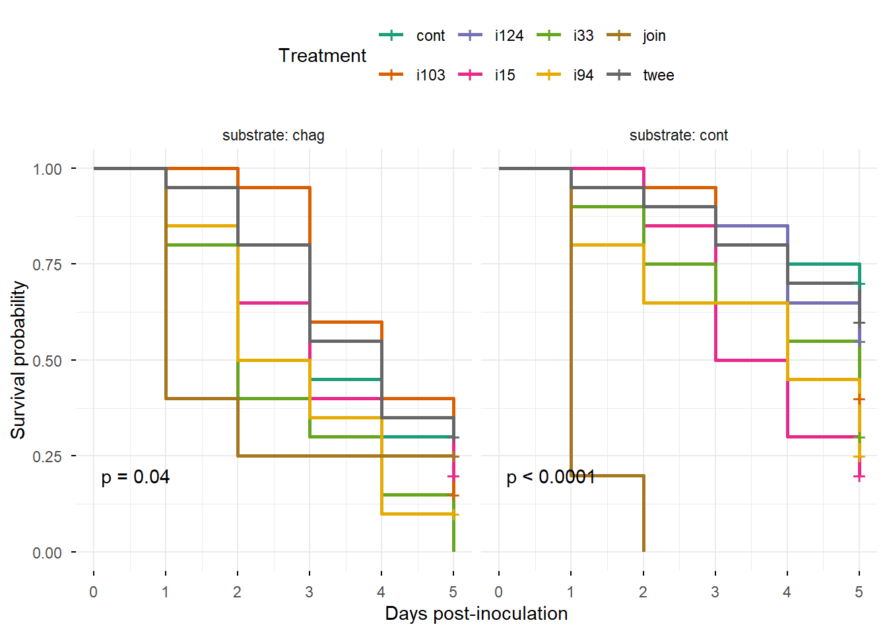
Final graph
# Preparação e ajuste do modelo (sem o controle positivo)
dados_plot <- isolate_selection %>%
filter(treatment != "join") %>%
mutate(
substrate_label = factor(
substrate,
levels = c("cont", "chag"),
labels = c("Acalypha wilkesiana", "Tropaeolum majus")
),
treatment_label = factor(
treatment,
levels = c("cont", "twee", "i15", "i33", "i94", "i103", "i124"),
labels = c("Control", "Tween 80", "Isolate 15", "Isolate 33", "Isolate 94", "Isolate 103", "Isolate 124")
)
)
fit_plot <- survfit(Surv(day, mortality) ~ treatment_label + substrate_label, data = dados_plot)
# Extração dos dados para o ggplot
df_surv <- tidy(fit_plot) %>%
separate(strata, into = c("treatment_label", "substrate_label"), sep = ", ") %>%
mutate(
treatment_label = gsub("treatment_label=", "", treatment_label),
substrate_label = gsub("substrate_label=", "", substrate_label)
)
df_zeros <- expand.grid(
time = 0,
estimate = 1,
treatment_label = unique(df_surv$treatment_label),
substrate_label = unique(df_surv$substrate_label)
)
df_surv_complete <- bind_rows(df_zeros, df_surv)
# Gráfico final
p_pub <- ggplot(
df_surv_complete,
aes(x = time, y = estimate, color = treatment_label, linetype = treatment_label, shape = treatment_label)
) +
geom_step(linewidth = 0.8) +
geom_point(size = 2.2) +
facet_wrap(~ substrate_label, ncol = 2) +
scale_x_continuous(breaks = seq(0, max(df_surv_complete$time), by = 1), limits = c(0, max(df_surv_complete$time))) +
scale_y_continuous(limits = c(0, 1.02), labels = scales::percent_format(accuracy = 1)) +
scale_color_manual(values = c("Control" = "black", "Tween 80" = "gray40",
"Isolate 15" = "#55DDE0", "Isolate 33" = "#33658A",
"Isolate 94" = "#2F4858", "Isolate 103" = "#F6AE2D",
"Isolate 124" = "#F26419")) +
scale_linetype_manual(values = c("Control" = "dashed", "Tween 80" = "dotted",
"Isolate 15" = "solid", "Isolate 33" = "solid",
"Isolate 94" = "solid", "Isolate 103" = "solid",
"Isolate 124" = "solid")) +
scale_shape_manual(values = c("Control" = 16,
"Tween 80" = 16,
"Isolate 15" = 16,
"Isolate 33" = 16,
"Isolate 94" = 16,
"Isolate 103" = 16,
"Isolate 124" = 16)) +
labs(
x = "Time post-inoculation (days)",
y = "Survival probability",
color = "Treatment",
linetype = "Treatment",
shape = "Treatment"
) +
theme_minimal(base_size = 12, base_family = "sans") +
theme(
strip.background = element_blank(),
strip.text = element_text(face = "italic", size = 11),
axis.title = element_text(face = "bold"),
axis.text = element_text(color = "black"),
legend.position = c(0.1, 0.20),
legend.title = element_text(face = "bold", size = 10),
legend.text = element_text(size = 9),
legend.background = element_rect(fill = alpha("white", 0.7), color = NA),
legend.key.height = unit(0.4, "cm"),
panel.grid.major.y = element_line(color = "gray90", linewidth = 0.2)
) +
guides(
color = guide_legend(ncol = 1),
linetype = guide_legend(ncol = 1),
shape = guide_legend(ncol = 1)
)
print(p_pub)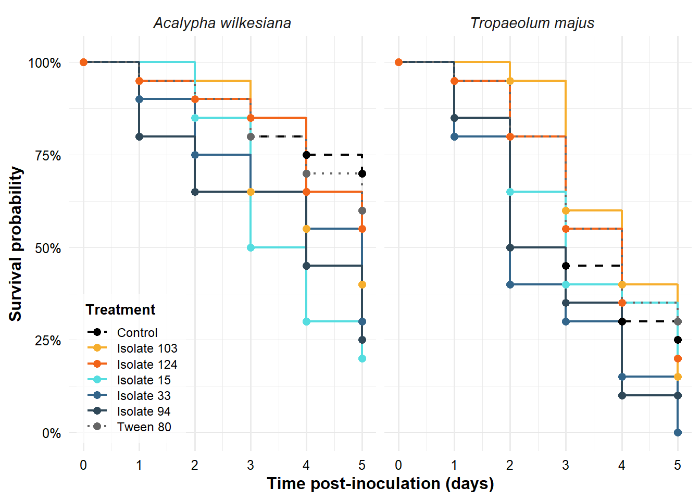
Mixed-effects Cox model (main effects + interaction)
# Diagnóstico da Premissa de Riscos Proporcionais
# Modelo Cox padrão para teste PH (com controle positivo)
cox_ph <- coxph(Surv(day, mortality) ~ substrate * treatment, data = isolate_selection)
teste_ph <- cox.zph(cox_ph)
print(teste_ph) chisq df p
substrate 1.61 1 0.20448
treatment 35.43 7 9.3e-06
substrate:treatment 4.21 7 0.75522
GLOBAL 40.43 15 0.00039# Aqui existe uma violação devido ao controle positivo que causa alta mortalidade em pouco tempo
# Filtrando o controle positivo e retestando PH
dados_sem_join <- isolate_selection %>%
filter(treatment != "join") %>%
droplevels()
cox_sem_join <- coxph(Surv(day, mortality) ~ substrate * treatment, data = dados_sem_join)
teste_ph_sem_join <- cox.zph(cox_sem_join)
print(teste_ph_sem_join) chisq df p
substrate 0.0599 1 0.81
treatment 7.3850 6 0.29
substrate:treatment 1.3075 6 0.97
GLOBAL 10.3405 13 0.67# Confirma que a premissa foi atendida
# Modelo Misto de Cox Final (coxme) e Pós-Hoc
fit_coxme_final <- coxme(
Surv(day, mortality) ~ substrate * treatment + (1 | colony),
data = dados_sem_join
)
# ANOVA Tipo III
Anova(fit_coxme_final, type = "III")Analysis of Deviance Table (Type III tests)
Response: Surv(day, mortality)
Df Chisq Pr(>Chisq)
substrate 1 8.9498 0.002775 **
treatment 6 15.1779 0.018918 *
substrate:treatment 6 8.0519 0.234326
---
Signif. codes: 0 '***' 0.001 '**' 0.01 '*' 0.05 '.' 0.1 ' ' 1# Comparações de pares via Hazard Ratios
# Compara tratamentos dentro de cada substrato
emmeans(fit_coxme_final, pairwise ~ treatment | substrate, type = "response")$emmeans
substrate = chag:
treatment response SE df asymp.LCL asymp.UCL
cont 1.252 0.314 Inf 0.765 2.048
i103 1.152 0.274 Inf 0.724 1.836
i124 1.285 0.313 Inf 0.797 2.073
i15 1.424 0.348 Inf 0.882 2.297
i33 2.910 0.656 Inf 1.871 4.527
i94 2.293 0.535 Inf 1.452 3.623
twee 1.032 0.269 Inf 0.619 1.721
substrate = cont:
treatment response SE df asymp.LCL asymp.UCL
cont 0.295 0.114 Inf 0.138 0.628
i103 0.731 0.204 Inf 0.423 1.263
i124 0.480 0.153 Inf 0.257 0.896
i15 1.272 0.310 Inf 0.788 2.051
i33 0.862 0.225 Inf 0.518 1.437
i94 1.146 0.288 Inf 0.700 1.876
twee 0.423 0.142 Inf 0.219 0.819
Confidence level used: 0.95
Intervals are back-transformed from the log scale
$contrasts
substrate = chag:
contrast ratio SE df null z.ratio p.value
cont / i103 1.086 0.385 Inf 1 0.234 1.0000
cont / i124 0.974 0.351 Inf 1 -0.073 1.0000
cont / i15 0.879 0.316 Inf 1 -0.357 0.9998
cont / i33 0.430 0.148 Inf 1 -2.446 0.1797
cont / i94 0.546 0.192 Inf 1 -1.723 0.6005
cont / twee 1.213 0.454 Inf 1 0.517 0.9986
i103 / i124 0.897 0.313 Inf 1 -0.312 0.9999
i103 / i15 0.810 0.282 Inf 1 -0.606 0.9967
i103 / i33 0.396 0.132 Inf 1 -2.777 0.0804
i103 / i94 0.503 0.171 Inf 1 -2.025 0.3986
i103 / twee 1.117 0.406 Inf 1 0.304 0.9999
i124 / i15 0.903 0.319 Inf 1 -0.289 1.0000
i124 / i33 0.442 0.149 Inf 1 -2.422 0.1893
i124 / i94 0.560 0.193 Inf 1 -1.681 0.6287
i124 / twee 1.245 0.459 Inf 1 0.595 0.9970
i15 / i33 0.489 0.165 Inf 1 -2.118 0.3415
i15 / i94 0.621 0.214 Inf 1 -1.383 0.8113
i15 / twee 1.380 0.510 Inf 1 0.871 0.9769
i33 / i94 1.269 0.414 Inf 1 0.731 0.9907
i33 / twee 2.820 1.000 Inf 1 2.911 0.0556
i94 / twee 2.222 0.802 Inf 1 2.212 0.2890
substrate = cont:
contrast ratio SE df null z.ratio p.value
cont / i103 0.403 0.202 Inf 1 -1.812 0.5398
cont / i124 0.614 0.324 Inf 1 -0.926 0.9686
cont / i15 0.232 0.111 Inf 1 -3.044 0.0377
cont / i33 0.342 0.167 Inf 1 -2.193 0.2992
cont / i94 0.257 0.125 Inf 1 -2.802 0.0752
cont / twee 0.696 0.376 Inf 1 -0.671 0.9941
i103 / i124 1.523 0.672 Inf 1 0.953 0.9636
i103 / i15 0.575 0.220 Inf 1 -1.443 0.7783
i103 / i33 0.848 0.334 Inf 1 -0.419 0.9996
i103 / i94 0.638 0.247 Inf 1 -1.159 0.9093
i103 / twee 1.727 0.790 Inf 1 1.195 0.8962
i124 / i15 0.378 0.158 Inf 1 -2.332 0.2287
i124 / i33 0.557 0.238 Inf 1 -1.369 0.8185
i124 / i94 0.419 0.177 Inf 1 -2.062 0.3758
i124 / twee 1.134 0.551 Inf 1 0.259 1.0000
i15 / i33 1.474 0.543 Inf 1 1.054 0.9411
i15 / i94 1.110 0.400 Inf 1 0.288 1.0000
i15 / twee 3.003 1.300 Inf 1 2.533 0.1475
i33 / i94 0.753 0.280 Inf 1 -0.763 0.9884
i33 / twee 2.037 0.905 Inf 1 1.601 0.6819
i94 / twee 2.707 1.190 Inf 1 2.271 0.2583
P value adjustment: tukey method for comparing a family of 7 estimates
Tests are performed on the log scale # Compara substratos dentro de cada tratamento
emmeans(fit_coxme_final, pairwise ~ substrate | treatment, type = "response")$emmeans
treatment = cont:
substrate response SE df asymp.LCL asymp.UCL
chag 1.252 0.314 Inf 0.765 2.048
cont 0.295 0.114 Inf 0.138 0.628
treatment = i103:
substrate response SE df asymp.LCL asymp.UCL
chag 1.152 0.274 Inf 0.724 1.836
cont 0.731 0.204 Inf 0.423 1.263
treatment = i124:
substrate response SE df asymp.LCL asymp.UCL
chag 1.285 0.313 Inf 0.797 2.073
cont 0.480 0.153 Inf 0.257 0.896
treatment = i15:
substrate response SE df asymp.LCL asymp.UCL
chag 1.424 0.348 Inf 0.882 2.297
cont 1.272 0.310 Inf 0.788 2.051
treatment = i33:
substrate response SE df asymp.LCL asymp.UCL
chag 2.910 0.656 Inf 1.871 4.527
cont 0.862 0.225 Inf 0.518 1.437
treatment = i94:
substrate response SE df asymp.LCL asymp.UCL
chag 2.293 0.535 Inf 1.452 3.623
cont 1.146 0.288 Inf 0.700 1.876
treatment = twee:
substrate response SE df asymp.LCL asymp.UCL
chag 1.032 0.269 Inf 0.619 1.721
cont 0.423 0.142 Inf 0.219 0.819
Confidence level used: 0.95
Intervals are back-transformed from the log scale
$contrasts
treatment = cont:
contrast ratio SE df null z.ratio p.value
chag / cont 4.25 2.060 Inf 1 2.992 0.0028
treatment = i103:
contrast ratio SE df null z.ratio p.value
chag / cont 1.58 0.597 Inf 1 1.201 0.2298
treatment = i124:
contrast ratio SE df null z.ratio p.value
chag / cont 2.68 1.120 Inf 1 2.357 0.0184
treatment = i15:
contrast ratio SE df null z.ratio p.value
chag / cont 1.12 0.396 Inf 1 0.319 0.7497
treatment = i33:
contrast ratio SE df null z.ratio p.value
chag / cont 3.37 1.200 Inf 1 3.420 0.0006
treatment = i94:
contrast ratio SE df null z.ratio p.value
chag / cont 2.00 0.706 Inf 1 1.966 0.0492
treatment = twee:
contrast ratio SE df null z.ratio p.value
chag / cont 2.44 1.080 Inf 1 2.003 0.0452
Tests are performed on the log scale Survival of A. sexdens foragers was significantly influenced by both the fungal isolate (Type III Wald \(\chi^2\) test: \(\chi^2_6 = 15.18, P = 0.0189\)) and the pre-exposure substrate regime (\(\chi^2_1 = 8.95, P = 0.0028\)). The substrate \(\times\) treatment interaction was not statistically significant (\(\chi^2_6 = 8.05, P = 0.2343\)).
Pre-exposure to T. majus significantly reduced baseline worker survival compared to the control substrate (A. wilkesiana). In non-inoculated controls, ants exposed to T. majus exhibited a 4.25-fold increase in mortality hazard relative to those maintained on the control diet (\(z = 2.99, P = 0.0028\)).
Under standard control substrate conditions, isolate 15 was the most virulent, causing a significant 4.31-fold increase in mortality hazard compared to non-inoculated controls (\(z = 3.04, P = 0.0377\)). Isolate 94 also displayed elevated hazard rates under control conditions, though this trend was marginal (\(HR = 3.89, z = 2.80, P = 0.0752\)).
When fungal exposure was combined with T. majus pre-exposure, mortality hazards increased overall. Isolate 33 exhibited a high absolute hazard rate on the T. majus substrate, with worker hazard increasing 3.37-fold compared to the same isolate on the control substrate (\(z = 3.42, P = 0.0006\)). Pre-exposure to T. majus also heightened mortality hazards for isolates 124 (\(HR = 2.68, P = 0.0184\)) and 94 (\(HR = 2.00, P = 0.0492\)). Conversely, isolate 15 maintained consistently high virulence across diets (\(HR = 1.12, P = 0.7497\)), demonstrating high intrinsic pathogenicity regardless of substrate-induced stress.
Median lethal time (LT₅₀) estimation
Median lethal time (\(LT_{50}\)) and its corresponding 95% confidence intervals were estimated directly from non-parametric Kaplan–Meier survival curves by determining the time at which the estimated survival probability reached 50% for each treatment group.
lt50_matrix <- quantile(fit_km, probs = 0.5)
lt50_table <- data.frame(
Treatment_Group = gsub(".*=", "", rownames(lt50_matrix$quantile)),
LT50_days = lt50_matrix$quantile[, 1],
CI_lower_95 = lt50_matrix$lower[, 1],
CI_upper_95 = lt50_matrix$upper[, 1],
row.names = NULL
)
print(lt50_table) Treatment_Group LT50_days CI_lower_95 CI_upper_95
1 chag_cont 3.0 2 NA
2 chag_i103 4.0 3 5
3 chag_i124 4.0 3 5
4 chag_i15 3.0 2 5
5 chag_i33 2.0 2 4
6 chag_i94 2.5 2 4
7 chag_join 1.0 1 NA
8 chag_twee 4.0 3 NA
9 cont_cont NA NA NA
10 cont_i103 5.0 3 NA
11 cont_i124 NA 4 NA
12 cont_i15 3.5 3 5
13 cont_i33 5.0 3 NA
14 cont_i94 4.0 2 NA
15 cont_join 1.0 1 1
16 cont_twee NA 5 NAMedian lethal time (\(LT_{50}\)) estimates derived from Kaplan–Meier survival curves further highlighted the differential speed of kill among treatment combinations. The chemical positive control (isocycloseram) demonstrated the fastest mortality, reaching 50% mortality within 1.0 day regardless of substrate regime (\(95\%\text{ CI: } 1.0–1.0\)). In non-inoculated negative controls, worker survival remained high on the control diet (A. wilkesiana), with mortality failing to reach 50% during the observation period (\(LT_{50} = \text{Not Reached, NR}\)). In contrast, pre-exposure to T. majus alone markedly reduced survival, resulting in an \(LT_{50}\) of 3.0 days (\(95\%\text{ CI: } 2.0–\text{NR}\)).
Under control substrate conditions (A. wilkesiana), fungal isolate 15 exhibited the shortest median lethal time among biological treatments (\(LT_{50} = 3.5\text{ days}, 95\%\text{ CI: } 3.0–5.0\)), followed by 94 (\(LT_{50} = 4.0\text{ days}, 95\%\text{ CI: } 2.0–\text{NR}\)). When fungal exposure was combined with T. majus pre-exposure, speed of kill was further accelerated; isolate 33 achieved the overall shortest median lethal time (\(LT_{50} = 2.0\text{ days}, 95\%\text{ CI: } 2.0–4.0\)), followed closely by 94 (\(LT_{50} = 2.5\text{ days}, 95\%\text{ CI: } 2.0–4.0\)) and 15 (\(LT_{50} = 3.0\text{ days}, 95\%\text{ CI: } 2.0–5.0\)).